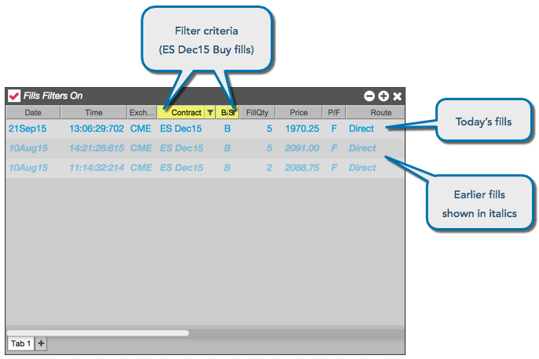

You can also sort or filter the list based on values for a column. If you hover the mouse cursor over the right side of a column title, the cursor changes to a hand to let you know you can use it to change the display. For example, if you want to sort or filter the display by contracts, you would hover over the Contract column and click the mouse.
The following example uses two filters to display only Buy orders for the ES Dec15 contract.
